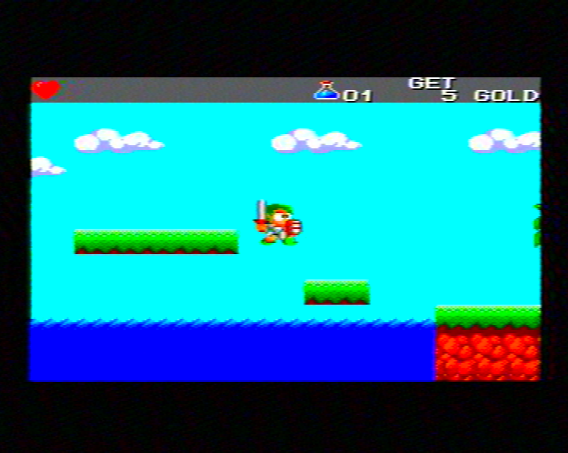
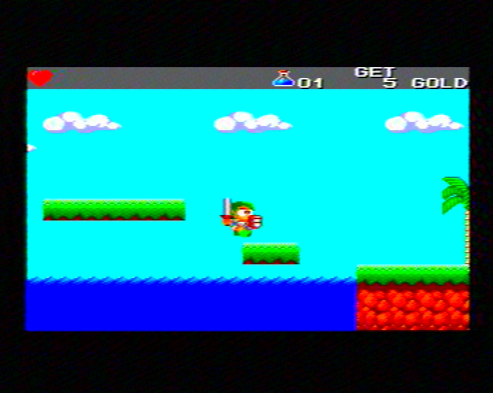
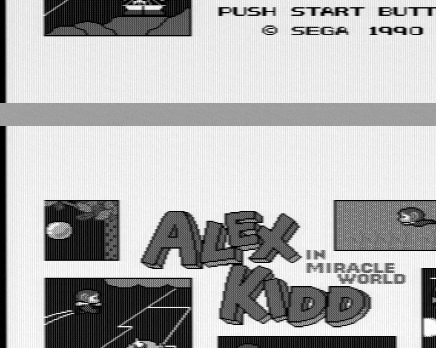

End-to-end recovery of a UK PAL signal from a Sega Master System II's RF modulator — from raw SDR samples to a decoded colour frame — on Linux.
An RX888 mk2 software-defined radio, a 1980s game console's TV modulator, and a stack of Python DSP. The goal: take the analog PAL broadcast a Master System emits on UHF, sample it wholesale through the SDR, and rebuild the picture in software the way a 1980s colour TV would have — sync separator, burst-locked subcarrier, the Phase Alternating Line trick, the lot.
The headline: a recognisable, full-colour picture pulled entirely from
raw SDR samples. Below is a decode of Wonder Boy III: The Dragon's
Trap gameplay — envelope-demodulated, sync-separated,
burst-locked and colour-decoded by cvbs_decode.py, captured at the
590.7 MHz workaround tune.


It started in monochrome. Here is the Alex Kidd in Miracle World
title screen, sync-separated and rendered full-width by
cvbs_to_image_v6.py — the mono path that came first:

PUSH START BUTTON / © SEGA 1990 title screen.
The grey band is the field-blanking interval where the single-field renderer wraps.That clean picture took some doing. The signal was, at first, completely invisible.
Five stages turn a wall of complex samples into a picture. Here's each one in plain terms.
The RX888 tunes its R828D silicon tuner near 591 MHz (UK UHF channel 36) and hands its analog signal down to an intermediate frequency around 4.5 MHz, then samples it at 24 million samples a second. The output is a firehose of raw 16-bit numbers — roughly 48 MB every second — describing the radio wave's wiggle. No picture yet; just the carrier and everything riding on it.
PAL vision is amplitude-modulated with negative polarity: loud = dark, quiet = bright, and the sync pulses are the loudest thing of all. We shift the carrier down to zero, low-pass it, take the envelope (how big the wiggle is, moment to moment), and flip it. Out comes the classic composite-video (CVBS) waveform: a voltage that rises and falls with brightness, with sync pulses punched below black.
The TV needs to know where each field starts. PAL marks it with a run of unusually long "broad" pulses in the signal. We low-pass the CVBS, slice it into pulses, classify them by duration, and look for a run of broad pulses — that's the top of the picture. Get this wrong and the image wraps vertically, status bar stranded in the middle.
Within a field, every scanline begins with a short ~4.7 µs sync pulse. Lock onto those and you know exactly where each of the ~300 lines starts, so they stack vertically instead of shearing. The Master System's modulator runs ~0.4% slow (64.28 µs lines, not 64.00), so we measure the real line period from the sync gaps rather than trusting the textbook value.
Colour rides on a 4.43361875 MHz subcarrier. Each line carries a short "burst" of this subcarrier in its back porch as a phase reference. We build a continuous local oscillator at exactly that textbook frequency, measure the burst phase line by line, rotate the chroma to line up, undo PAL's alternating-line V-sign trick, and matrix the resulting U/V plus brightness into RGB. The detail that makes or breaks it is below.
For a long stretch across earlier sessions, the conclusion was "the RX888's analog noise floor is too high to recover the picture." Wrong. There were three red herrings before the real cause:
The actual fault was one line. rx888_stream initialised the
R828D tuner with a reference clock of 0:
// before
rx888_send_command(&handle, FX3Command::TUNERINIT, 0)
// after — pass the 16 MHz reference the tuner's PLL needs
rx888_send_command(&handle, FX3Command::TUNERINIT, 16_000_000)With a zero reference, the tuner's PLL free-ran: the vision carrier landed at 2.07, 2.82, 3.00, 3.64, 6.25 MHz — a different place every single capture. With the correct 16 MHz reference it locks to the designed 4.57 MHz IF, reproducibly, forever. Filed upstream as issue #15 / PR #16.
The first colour decoder (v7) produced garbage even on a clean
synthetic test signal — a sea of green where there should have been
colour bars. That was the tell: the bug was in the decoder, not the capture.
We switched to hacktv-generated PAL colour bars as a known-good
input and found six bugs against the canonical reference implementation. The
two that mattered most:
With those fixed, the decoder produces correct primaries on both the synthetic colour bars and the real Master System capture: red heart, blue potion, yellow tiles, light-blue underwater background.
Two distinct defects remained, and a lot of the investigation's rigour went into not conflating them.
A solid red bar came out with a faint periodic ripple every ~13 columns.
Cause: the PAL-B/G FM sound subcarrier at vision+5.5 MHz
was leaking through the chroma band-pass filter's upper edge, beating down to
1.07 MHz and landing inside the colour-difference passband. Proven by
toggling hacktv --noaudio: the ripple vanished completely
(red-bar variation 29.57 → 0.00). Fix: pull the chroma BPF upper
cutoff from 5.5 MHz down to 5.0 MHz. Just like the sound trap a real
PAL receiver puts before its video detector.
The red heart sprite drags a ~20-column blue tail off its right edge. This
one resisted four separate "it must be X" theories — BPF ringing,
comb-filter error, envelope-detector quadrature distortion, sound leakage
— each confidently asserted and then disproved. So instead of guessing
again, we ran an isolating experiment: feed hacktv's known-clean
signal through the exact same DSP. Zero trail. The pipeline is
faithful; the trail enters upstream, in the capture chain.
The clincher was sweeping the tuner's IF position while the same SMS stayed plugged in — identical DSP, only the R828D's internal frequency changing:
--frequency | Vision IF | Trail energy past sprite |
|---|---|---|
| 591.2 MHz (default) | 4.59 MHz | 4975 (moderate) |
| 590.7 MHz | 4.10 MHz | 364 (5× cleaner) |
| 590.2 MHz | 3.60 MHz | 0 (cleanest in sweep) |
| 589.2 MHz | 2.60 MHz | 15228 (3× worse) |
| 591.7 MHz | 5.10 MHz | 1560 |
The trail varies >3× with IF position, non-monotonically. That's the fingerprint of SAW-filter group-delay distortion in the R828D — a silicon DVB-T/C tuner whose acoustic filter was designed for digital reception, where group-delay flatness across the chroma band simply isn't a design goal. Plug the same SMS into a real PAL TV and the trail is gone, which corroborates: it's the tuner, not the console and not our code.
--frequency 590700000 — to land the chroma sideband in a
flatter "valley" of the SAW's group-delay curve. ~5× less trail, no DSP
changes, signal still strong. Register pokes into the R828D were tried and
came up inconclusive (and register 0x0A is genuinely dangerous — a
bad write needs a physical replug to recover).
| Path | Status |
|---|---|
Linux + rx888_stream (with PR #16) + SMS — mono | works ~80 dB SNR, clean frame |
| Same + SMS — colour | works correct primaries, verified vs colour bars |
| BBC Micro (~588 MHz) — mono | partial picture visible, sync fragile |
| BBC Micro — colour | no weak-signal sync defeats it |
rx888_stream without PR #16 | no wandering carrier, no picture |
| HF + AM broadcast (wire antenna) | works |
| Heart-trail past coloured sprites | mitigated ~5× reduced by IF-tune workaround |
# capture (5 s is plenty for several frames)
rx888_stream vhf -f SDDC_FX3_v22.img -s 24000000 \
--frequency 590700000 --vhf-lna 14 --vhf-vga 8 --gain 1 \
-o cap.bin
# demod to baseband CVBS (keep chroma for colour)
python3 tools/demod_real.py cap.bin cvbs.s16 --fs 24e6 --lpf 5.5e6
# decode to a colour frame
python3 tools/cvbs_decode.py cvbs.s16 frame.png \
--yc-mode bpf --chroma-phase minimumdemod_stream.py) runs at 0.42× realtime and is structured
as the architecture sketch for it.